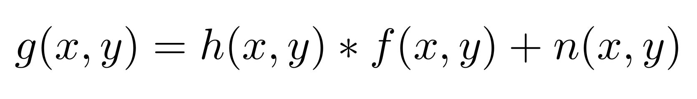
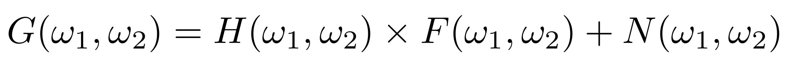
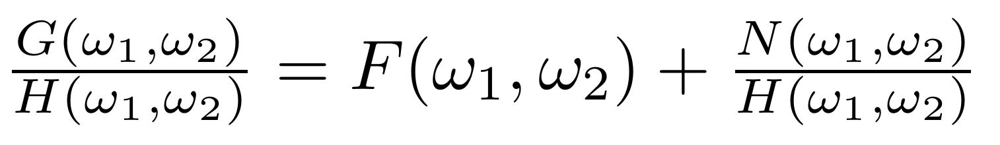

Image deblurring at its basics is taking any image that is not sharply focused and processing it to make it more clear to the viewer. Restoring an image that is "blurred" is one of the most highly publicized parts of image processing. There are several different kinds of image distortions that occur when you take a picture: noise, incorrect focusing, white balance error, exposure error, lens distortion, motion blur, and more. Most people would like their photos to come out sharp and focused, so that viewers can easily see what the photo is about. In our project we will focus mostly on incorrect focusing blur and motion blur. Most of the other distortions are well known and correctly, but the deblurring of images that are focused incorrectly or have camera movement is still very much in development. We will mostly explore incorrect focus and various techniques currently available to deblur images.
We will begin by talking about what causes blur in an image. We will assume that you have some knowledge about linear systems in time and frequency domain, the Discrete Fourier Transform (DFT), and the use of the FFT.
So what causes image blur? The below function outlines the concept of image deblurring:
In this formula f(x,y) represents the unblurred image coming to the camera CCD, h(x,y) represents the blur kernel, and n(x,y) represents the noise added due to the CCD. Notice that the noise is not convolved with the blur kernel, this is because the noise originates from the random motion of electrons in the camera's CCD array, which cannot be avoided and is not blurred. The noise is additive and Gaussian distributed which means that we don't have to worry about its correlation with the proper image itself (though definitely still have to deal with it!).
The blur kernel, also called the point spread function, is caused by improper focusing or by moving the camera while the image is being taken. You can imagine with motion blur, that the pixels in the CCD array have smeared values for what is coming through the lens. There is now one point that has been smeared across multiple pixels. So for each pixel in the CCD we have the sum of multiple pixels in the nearby vicinity. We represent this blur using the point spread function. The advantage of writing the blur in this way is that we can artifically introduce blur by creating our own point spread function (PSF). This allows us to test the effectiveness of different deblurring methods when we know exactly how the image was blurred.
The easiest and most obvious way to fix image blur is to look at this formula in the frequency domain (by doing the DFT):
Then by dividing out by H(w1,w2), we get:
That's great because now we have a solution for f(x,y) after doing the inverse DFT...except for one problem. The noise. Normally the human eye cannot detect the amounts of noise that the camera adds, but if H(w1,w2) has low values in any regions then the noise dominates in this formula and all hope of image recovery is lost.
For our first example we took an image and artificially blurred it to show how deblurring basics work. Note that this image had noise when it was taken from the camera, but we applied the blur kernel (or PSF) to the image and the noise, thus for all intents and purposes there is no noise as described in the above equations. Thus by using fft2 and ifft2 in MATLAB we are able to recover the image exactly.
As you can see this formula works great (as it should) when there is no noise in the system. In the above figure you can see that for both the motion and disk (which behaves like out-of-focus blur) kernels you cannot read the text, but when restored the image looks great. Below we took the disk kernel and showed what happened if we added Gaussian noise to the image AFTER it had been blurred. With added noise, the use of this basic method of image deblurring fails.
To overcome obstacles of signal processing (including noise reduction in image processing), a method called the wavelet transform has been developed. In the case of image processing the wavelet transform is superior to the DFT (Discrete Fourier Transform) and the STFT (Short-Time Fourier Transform). The DFT cannot provide information about how the frequencies vary over time. The STFT solves this issue by taking windows of specified length and shifting them across the signal. This creates multiple DFT's of each of these windows and assumes that the signals in theses intervals are approximately time-invariant. There is still an issue with the STFT as one needs to specify a window of a specific length and use it for the duration of the signal. Signals with a varying range of frequencies can be hard to evaluate because of this. Transients as a result of improper windows can cause aliasing and distort the evaluated signal. Wavelets address the issues of fixed window sizes of the STFT. Wavelets allow variable window sizes while analyzing different frequencies. This is possible by scaling a shifting a certain wavelet function. Small scales are used for high frequencies while large scales are used for low frequencies. The figures below demonstrate the effectiveness of the wavelet transform and its role in noise removal. Noise is unavoidable and almost unpredictable in the collection of images. Moreover, as you have seen noise has adverse effects on image deblurring. In this demonstration, noise was exaggerated by the addition of Gaussian white noise to an out of focus image captured by a camera. It was then shown how this noise negatively affects the deblurring of the image. Using the Wavelet Toolbox in MATLAB, the noise was able to be removed. This allowed for a better deblurred image. The one adverse effect of using the Wavelet Toolbox was that the photo became brighter. This however is because of the toolbox used and not the wavelet transform. We did not dive in-depth into the wavelet transform, but rather wanted to experiment with its capabilities. For more information please see the attached MATLAB code in the References section.
There are several developed methods of image deblurring when you (1) have noise and/or (2) do not know the point spread function. Typically you have both of these things. For the purposes of this section we will be only focusing on images in which we artificially add both noise and blur. This allows us to quantify the abilities of different debluring algorithms without
Put links to file here as well as link to checkpoints, as well as update checkpoint
Feel free to email us to provide some feedback on our templates, give us suggestions for new templates and themes, or to just say hello!
Visit Download Page